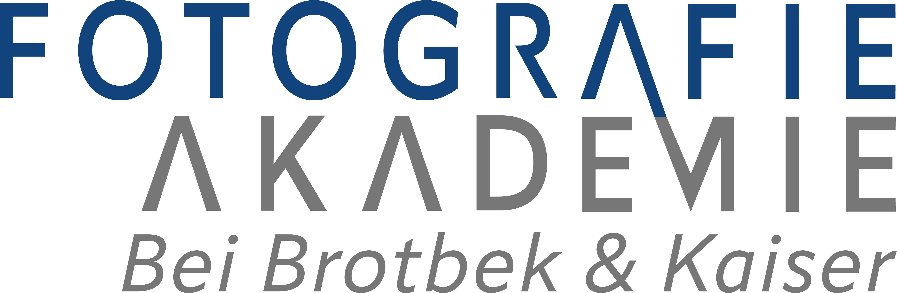

AUSPROBIEREN. VERSTEHEN. FOTOGRAFIEREN.
Verändere Blende, Brennweite und Abstand. Sieh direkt, wie sich dein Bild und der scharfe Bereich verändern.
Motiv und Hintergrund verschieben. Mit den Pfeiltasten fein einstellen; Ende setzt den Hintergrund auf unendlich. Die Skala ist logarithmisch.
Ein Motiv, verschiedene Einstellungen. Speichere Varianten und vergleiche ihre Wirkung.
Variante anklicken zum Laden · Speicherung nur in diesem Browser
Eine offene Blende, eine längere Brennweite und ein kleiner Abstand zum Motiv verkleinern in der Regel die Schärfentiefe. Ein weiter entfernter Hintergrund wird stärker unscharf. Der blaue Bereich im Diagramm zeigt die akzeptabel scharfe Zone.
Mit «Motivgrösse im Bild beibehalten» werden Entfernung oder Brennweite ausgeglichen. Die Portrait-Tasten stellen einen passenden Ausschnitt ein. «Link teilen» erzeugt eine URL mit den aktuellen Parametern. Vergleiche bleiben lokal im Browser. «Zurücksetzen» setzt nur die aktuellen Einstellungen zurück.
Der Hintergrund liegt immer hinter dem Motiv. Ein deaktiviertes Hintergrundfeld bedeutet «unendlich». Die Motivgrösse-Sperre hält den vertikalen Bildausschnitt fest; bei einem anderen Seitenverhältnis ändert sich die Breite. Die Brennweite wird bei einer direkten Distanzänderung ausgeglichen, die Distanz bei einer direkten Brennweitenänderung.
Dünnes, symmetrisches Objektiv mit Brennweite f, Blendenzahl N, Fokusdistanz s und Zerstreuungskreis c. Alle Formeln verwenden intern Millimeter.
H = f² / (N · c) + f Nah = s · (H − f) / (H + s − 2f) Fern = s · (H − f) / (H − s) Fern = ∞, wenn s ≥ H Unschärfe(z) = f² · |z − s| / (N · z · (s − f))
Standard: c = Sensordiagonale / 1500. Druck: 0.2 mm entlang der langen Papierseite. Ausgabe: zwei Pixel entlang der langen Bildseite. Diese Optionen definieren ein Betrachtungskriterium, keine feste Eigenschaft der Kamera.
Konverter ändern Brennweite und Blendenzahl mit demselben Faktor. Die Anamorphot-Option erweitert den horizontalen Bildwinkel und verändert die Bokehform vereinfachend. Sie simuliert kein konkretes Objektiv.
Beugung: Airy-Durchmesser 2.44 · 0.00055 mm · N · (1 + Abbildungsmassstab). Geometrische Unschärfe und Beugung werden näherungsweise quadratisch kombiniert. Übersteigt die Beugung das Kriterium, existiert kein akzeptabel scharfer Bereich.
Die Hyperfokal-Taste berücksichtigt bei aktivierter Beugung auch den von der Fokusdistanz abhängigen Airy-Durchmesser. Die obige H-Formel beschreibt den Fall ohne Beugung.
Abstände beziehen sich auf die Hauptebene des idealisierten Objektivs. Fokus-Breathing, Pupillenmassstab, Aberrationen, Sensorfilter und Schärfung sind nicht modelliert. Die Foto-Unschärfe ist eine Näherung mit einer abgetasteten Blendenform. Die zehn Bokehformen verändern die Unschärfe des Fotos. Bereits im Originalfoto vorhandene Unschärfe lässt sich nicht rückgängig machen. Alle Hintergrunddetails werden vereinfacht derselben Entfernung zugeordnet; das Foto ist keine 3D-Rekonstruktion. Fotoausschnitt und maximale Vergrösserung sind begrenzt. Die Personen und der Hund sind KI-generiert, ihre Lichtvariante wird passend zum Ort gewählt. Im Kreuzgang folgen die Motive dem sichtbaren Boden zum Fluchtpunkt; die Füsse bleiben auf der vorhandenen Bodenfläche. Bei den Landschaften hält die Vorschau kleinere Motive an der unteren Bildkante; Füsse und Pfoten bleiben knapp ausserhalb des Ausschnitts. Nahe Portraits behalten etwas Raum über dem Kopf. Diese bewusste Bildgestaltung verhindert schwebende Motive, ohne den Hintergrund zu verändern.
Die Kameraauswahl enthält zwei geprüfte Modelle. Weitere Kameras lassen sich über die Sensorabmessungen einstellen. Objektivvorgaben sind allgemeine Brennweiten-Blenden-Kombinationen, keine Herstellerdatenbank. Konverterkompatibilität und Bildkreis werden nicht geprüft.
Formeln und Vergleich: DOFMaster · Cambridge in Colour: Schärfentiefe · Beugung. Die Referenzfälle wurden mit identischem Zerstreuungskreis verglichen.
Sensorquellen: Nikon Z50II · Fujifilm X-T50.
Eigenständig programmierte Anwendung mit bereitgestellten Originalfotos und KI-generierten Motiven. Kein Originalcode oder Bildmaterial von dofsimulator.net übernommen.